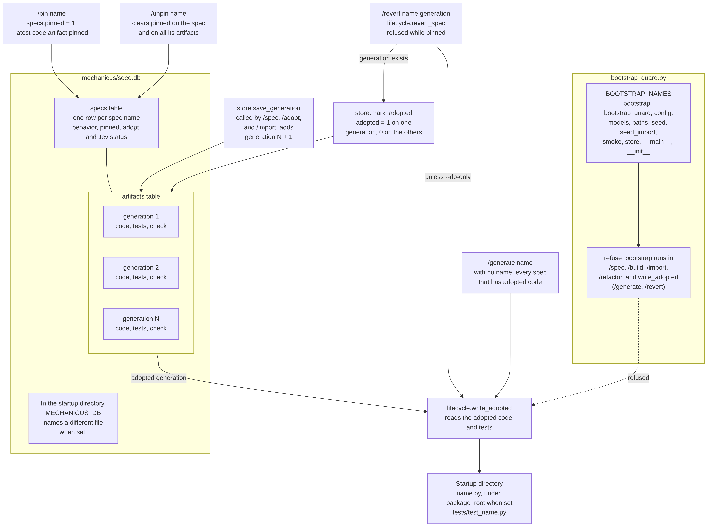

Mechanicus
Mechanicus is a coding REPL that makes a model's tests fail before the model is allowed to write any code.
The problem
Tests that a model writes for its own code can pass without proving anything.
Every way that happens shows up as a check in the harness code. A suite can pass against an empty module, which means it never needed the behavior in the first place. It can make trivial asserts, or it can never import the implementation at all. When the behavior depends on another module, the tests can monkeypatch that module and never exercise it. A later generation can also pass the same tests with more lines than the version already in use. What I wanted was a loop where the model writes both the tests and the code, and the code still has to clear checks that the model does not control.
Why I built it
The generator prompt in codegen.py spells out what I was after. The system should be able to generate and improve parts of itself while remaining recoverable, and self-modification is allowed only through the path of spec, regenerate, test, and explicit adopt.
A local REPL was enough for that. I describe a behavior in one line at the prompt, and Mechanicus owns the order of work from there. The repository also ships a self-modify guide for running Mechanicus on its own source.
What I built
Mechanicus is an interactive REPL built on prompt_toolkit, and it can also replay a file of slash commands with mechanicus -s FILE. The core loop uses four commands. /spec greet Return the word hello stores the behavior, writes the tests and a separate behavioral check, proves they fail, and then asks the model for the smallest working implementation. /adopt greet runs pytest on that generation and marks it adopted when the tests pass. /show greet prints the spec with its adopt and Jev status, and /generate greet writes greet.py and tests/test_greet.py into the startup directory.
A planning layer sits on top of that loop. /plan writes one .module file per module, /build turns those files into adopted Python, and /add updates the modules that a new feature touches. A project can also target a Swift package, and then adoption runs swift test in place. When TYPESAFE_API_KEY is set, a TypeSafe model called Jev checks plan coverage and whether the tests require calls into adopted dependencies. When the key is empty, Mechanicus records the Jev result as skipped, and a failed Jev call is never treated as approval.
Model names and reasoning effort live in config.yaml, and OPENAI_API_KEY and TYPESAFE_API_KEY live in .env. Both files sit under ~/Library/Application Support/mechanicus unless MECHANICUS_APPDIR points somewhere else. The /help screen groups 29 slash commands into Draft, Plan and build, Spec lifecycle, Disk and run, and Session.
Three decisions
These are the three choices I would defend in a design review.
1. The tests have to fail before any code exists.
/spec writes the tests first and hands them to tests_until_red in lifecycle.py. Before pytest runs at all, harness.sniff_test_sources rejects a suite that never imports impl or only makes trivial asserts, and a thinness check catches a check file that duplicates the tests. Then pytest runs against an empty impl.py, and classify_before_code_with_reason sorts the result into red, broken, or pass. Only a red result moves forward. A broken or passing suite goes back to the model for repair up to repair_attempts times (three in the example config), and a spec whose tests never go red is not saved. I was counting on that red run to prove the tests reach into the implementation, because a suite that already passes against an empty module says nothing about the code the model writes next.

codegen.repair_tests until the repair attempts run out, and the Jev check appears only on the red branch for specs that use adopted modules. The lower half shows /adopt reading the latest generation from .mechanicus/seed.db and checking length before pytest runs, with failed runs sent to codegen.repair_code and each kind of refusal drawn as its own exit.
2. A generation stays a candidate until pytest passes on it.
/spec saves the code as a numbered generation and stops there. /adopt is the only path to adopted code, and it runs the tests and the check against that generation in a temporary directory. When pytest fails, codegen.repair_code gets the failure output and tries again. A passing run is still not enough when the spec uses adopted modules, since uncalled_modules sends code that never calls them back for repair and real_deps_exercised catches tests that fake the dependency. Length gets checked twice, once before the tests run and again after they pass. A generation that is longer than the adopted one for the same behavior is refused, and the adoption test output in the proof section shows the message it prints. The bet was that the model could propose as many generations as it liked, while only a test run I can repeat would get to change what is adopted.
3. Each project keeps its own history, and the bootstrap stays hand-written.
The database is .mechanicus/seed.db in whatever directory I start Mechanicus from, so one codebase's specs never show up in another's. It holds a specs table and an artifacts table, and every generation's code, tests, and check are stored as rows with a generation number. That record is what lets /revert <name> <generation> put an earlier generation back and lets /pin freeze a spec. A short list in bootstrap_guard.py (bootstrap, config, store, paths, seed, and a few others) names the modules that /spec, /build, /generate, /import, and /refactor refuse to touch. That mattered because the aim is a tool that can rebuild its own leaves, and recovering from a bad generation depends on a history the model cannot erase and a core it cannot rewrite.

specs table above the artifacts table, where each generation holds its own code, tests, and check. /pin and /unpin write to the specs row, while /revert goes through store.mark_adopted and, unless --db-only is set, through write_adopted to put name.py and tests/test_name.py in the startup directory. The BOOTSTRAP_NAMES list on the right feeds refuse_bootstrap, which can stop that write along with /spec, /build, /import, and /refactor.
Proof
Every run in this section works from a fresh clone without an API key, so you can reproduce it yourself.
Installing the package into a venv with pip install -e . and running the repository's suite with .venv/bin/python -m pytest -q -p no:warnings -p no:cacheprovider -rs prints this output.
........................................................................ [ 39%] ........................................................................ [ 79%] ...........................s.......... [100%] =========================== short test summary info ============================ SKIPPED [1] tests/test_swift_package.py:132: swift toolchain not installed 181 passed, 1 skipped in 5.14s
The one skipped test is the Swift package test, which needs a Swift toolchain on the machine.
The adoption tests drive /adopt with stored generations and make no model call. Running .venv/bin/python -m pytest -q -rA -p no:warnings -p no:cacheprovider tests/test_adopt_result.py shows the console output from each gate, including the length refusal.
...... [100%] ==================================== PASSES ==================================== _________________________ test_adopt_ok_records_result _________________________ ----------------------------- Captured stdout call ----------------------------- Running tests... Tests passed. Adopted. _______________________ test_adopt_longer_records_failed _______________________ ----------------------------- Captured stdout call ----------------------------- Refused. Generation 2 is 2 lines; adopted generation 1 is 1 lines for the same behavior. ______________________ test_adopt_no_tests_records_failed ______________________ ----------------------------- Captured stdout call ----------------------------- No generated tests. ______________________ test_adopt_harness_failure_records ______________________ ----------------------------- Captured stdout call ----------------------------- Running tests... Tests failed. Not adopted. ___________________ test_save_generation_clears_adopt_result ___________________ ----------------------------- Captured stdout call ----------------------------- Running tests... Tests passed. Adopted. =========================== short test summary info ============================ PASSED tests/test_adopt_result.py::test_adopt_ok_records_result PASSED tests/test_adopt_result.py::test_adopt_longer_records_failed PASSED tests/test_adopt_result.py::test_adopt_no_tests_records_failed PASSED tests/test_adopt_result.py::test_adopt_harness_failure_records PASSED tests/test_adopt_result.py::test_save_generation_clears_adopt_result PASSED tests/test_adopt_result.py::test_show_and_specs_include_adopt 6 passed in 0.49s
The last run is a command script with no model calls in it, executed with mechanicus -s proof.mech from an empty directory. Neither key was set, and MECHANICUS_APPDIR pointed at a scratch directory. The script proof.mech contains these lines.
# no model calls in this script /specs /spec store Keep specs in SQLite /show greet /cost /quit
Running it prints the following session.
Running script: proof.mech > /specs No specifications. > /spec store Keep specs in SQLite 'store' is a bootstrap module. It cannot be regenerated. > /show greet Not found. > /cost Session estimate $0.000 0 OpenAI turns > /quit Session estimate $0.000 Log file: /tmp/mech-app/logs/20261122T135952-6017.log
The bootstrap guard refuses the /spec store line before any model call, and /cost confirms that the session made 0 OpenAI turns. After the run, the empty directory contains .mechanicus/seed.db.

mechanicus entry point, where the interactive REPL and the script runner both load the app directory and feed repl.handle_line. From there /spec passes the bootstrap guard and moves through test writing, the weak-test sniff, the red pytest run, the optional Jev check, and code generation. /adopt checks length, runs the pytest gate and the dependency checks, and checks length again before store.mark_adopted records the generation. Dotted lines mark the calls to the OpenAI Responses API, and /generate copies adopted code and tests from .mechanicus/seed.db into the startup directory.
Why I built it this way
Every gate in Mechanicus exists so the model can be wrong without the project paying for it.
The tests go red before any code exists, and pytest decides what gets adopted. The database keeps every generation, so a bad one can be reverted, and the bootstrap modules stay out of the model's reach. If a model is going to write code for me, I want it to write the tests first and then lose every argument with pytest.
The code lives at github.com/rdegraci/mechanicus, and you can go back home from here.